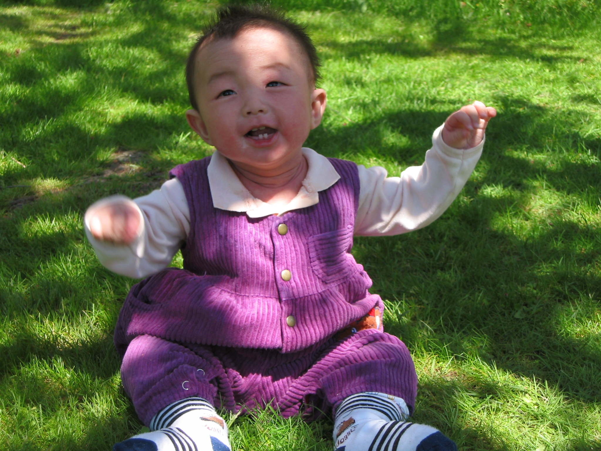
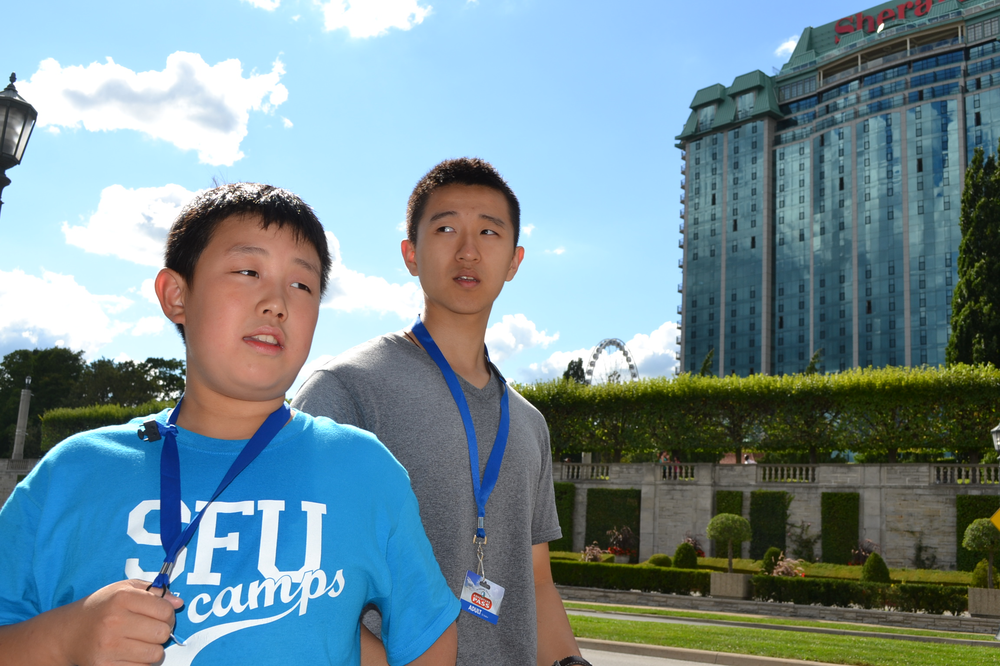

Most people know me as Andy Shen, but it's actually Andy Lizhe Zhao. I was born in the Vancouver Women's Hospital on July 9th 2002, and I live with both of my parents in Langley, BC. My brother, ten years older than me, lives in Australia as a doctor.
Andy Shen's Development Scrapbook
Introduction
Hi! Who the hell am I?
Physical Development


Details of my Birth
Some interesting details about my birth is the differences between my brother and I. My parents always tell stories about how my brother was born meek and quiet, but when I entered this world, I was a big, fat, screaming baby.
I was born around 11 AM on July 9th, 2002, and within three days I had enjoyed my first car ride in our parents old white sedan. Because of my eczema, my parents describe me as "a blanket of snow" when they unwrapped me from
my baby burrito self, from all the dry skin that was flaking off (TMI? I'm sorry).
Sitting up
I first sat up around 6 or 7 months
My First Step
My first step happened around 1 year
Potty Training
I was potty trained fully around 2 years old
Andy age 13
Puberty
Puberty affects everyone in their physical development. It occurs when your body starts producing hormones that result in differentiation of your body. During this time,
primary sex characteristics are developed. Primary sex characteristics are the sexual reproductive organs, which develop during puberty.
Secondary sex characteristics are physical attributes apparent based on a person's sex. For example, women typically develop
slimmer waists and wider thighs, whereas men typically grow wider shoulders.
For girls, puberty begins with menarche around the age of 12, the first menstrual period. For boys, this is spermarche, the first ejaculation, which occurs around age 14.
During this period, the brain also undergoes neural pruning, severing unused neurons and connections and strengthening existing ones. The frontal lobe, in charge of judgement
and decision making, continues developing, sharpening our sense of judgement.
Puberty can also be an emotionally draining and stressful time, as the influx of hormones tend to increase stress levels and emotionally instability. This is why teens tend to
attempt riskier behaviours. Furthermore, the social development during this time means social acceptance by peers is especially impacting on teenagers, meaning they have a very
fragile self esteem and maybe be easily pressured to do things by close friends.
Language Development
My First Word
The first words I spoke were simple words like "mama" and "baba" and I said these around two and years old, a bit late because of both english and mandarin being used in the house
I never made any specific funny sounds as a kid, but I remember in a specific childhood video yelling "BAD PEN" in mandarin.
Definitions
Telegraphic Speech: A form of basic speech using only key words to explain an idea, such as "me want food" when the child is hungry or "scary monster" when the demon comes back knocking on the window
even after you sacrifice your firstborn child to it
Overgeneralization: Learning basic english and grammatical rules or patterns without understanding exceptions to the rule, such as spelling all words with "i before e," disregarding words
like receive.
Overextension: Applying learned words to other situations or objects that may not necessarily be correct, such as calling all berries "strawberry" or all meat "chicken"

During early childhood, because english was my second language (mandarin being my first) I often learned and struggled with some english grammar conventions. I often overgeneralized grammar rules for past tense words, and pluralization (eg. cactuses, mouses). Even now, I overextend the word "friend" to include those who backstab me and use me, even though I should be calling them "snakes".
Cognitive Development
My Cognitive Development Timeline
Moral Development
Where am I?
At this point, I think I'm very strongly in post-conventional morality in terms of my principles. I often like to question authority, rules, and dictate my behaviour based on my own internalized ideals of what I believe to be correct or incorrect. I tend to follow my own way of life, and while falling into the normal social contract, find many personal issues with how these decisions are made. I hold myself to the morals of being kind towards as many people as possible and creating good connections with them. Furthermore, I think many pieces of our modern society, such as the education system, are generally heavily flawed, and while I am comfortable with learning in them, I believe a more personalized, hands on education system, that takes into account personal differences and offers it as a privilege instead of a right would increase the productivity of students in school. Encouraging education to those who want it and finding ways to spread it is better than offering education and opportunities to those more fortunate but may not be qualified or interested in learning.

Psycho-social development
Journal
Erikson's stage 5 and 6 of psychosocial development may be the hardest hurdles in life, as commonly, the pressures from school and the peers create a high stress environment
for this time of self-identity. During this time, there is the stress of doing well in school, creating connections with peers, appealing to parents, discovering what you might
want to pursue in the future, and learning life skills, such as money management, cooking, and household management. On top of this comes the stress of puberty, adding on emotional pressure
on top of the already existing pressures. During this time, teens experience a crisis with their own identity, and their role in the household, society, and the world. At this stage,
if teenagers succeed in finding their personal identity, they have a feeling of accomplishment, but if they don't, they might feel confused as to what direction their life should go.
They have only a few years to direct the rest of their lives, which is a drastic decision to be made in such a tight timeline. Physically, this time is part of physical turmoil, while our
bodies undergo puberty, adopting primary and secondary sex characteristics. The influx of hormones also creates more emotional fragility, meaning teenagers would be more susceptible and
responsive to emotions and feelings. During this time is also when our brain is pruning and refining our judgement, which means our decision making is slowly changing throughout this time,
altering our opinions as well. Finally, social and peer pressures are extremely prevalent during this time period, being a major factor of many teenagers highschool careers.
All of these fall under a teenagers ability to understand themselves and what role they should play in society, whether by changing their interests, opinions,
or just adding extra undue stress during this time period.
Stage 6, early adulthood, is becoming increasingly difficult as it describes intimate friendships and relationships. In reality, the average age of marriage is increasing, meaning
these more intimate relationships are becoming harder to come by. Adding onto this, the number of close friends per person is going down, affecting the intimacy an adult feels.
The expectations of society during this time are also higher, as people are expected to exceed in university, pursue careers, find a stable relationship, and essentially settle for the rest of their lives.
If people do not develop intimate feelings in this time, they may feel isolated and incomplete, which is an increasing possibility considering the earlier mentioned statistics. Intimacy
is becoming more and more difficult as social pressures, acceptance, and other factors of the social clock add stress to an already crowded time of life.
Thus, both these stages are the most
difficult to overcome, as they occur in the most strenuous and physically taxing time of life, and can create emotional tolls that last many years into our futures.
Social-Emotional Development
Harry Harlow's Attachment Theory
Attachment is a bond that a child has towards others, such as a parent, caretaker, or sibling. Harry Harlow theorized that those who provide physical comfort create deeper attachment than those who simply nourish the child, with his experiments on monkeys and wire vs cloth mothers. He found that the monkeys preferred the cloth mother as a source of comfort and familiarity, even though it provided nothing towards supporting the monkey's life.
Attachment
During my childhood, I was probably most attached to my brother, although my mom would be about equal. This was because my brother was often the one having fun with me as a child, and possibly because we shared a bed when we were younger. My mom was also more often at home, meaning I had more time to create attachment to her. I also remember a stuffed bear I called "Bear bear" (previously my brother's), but he is only a distant memory now.
Me at the age of 5
Imprinting
Imprinting is the process of creating attachment rapidly and early in their early years of development. I would have experienced imprinting with my brother, as he was one of the first people to hold me, and he was also almost always at home and played with me as a child. Physical contact may also play a factor in this imprinting because, as previously mentioned, we shared a bed.
My brother and I in Toronto
Effects of lack of attachment
If a child doesn't experience secure attachment in their early childhood, they may have issues with development of speech, learning, and creating social connections and relationships. They may also feel more insecure about themselves, and may be less willing to explore.